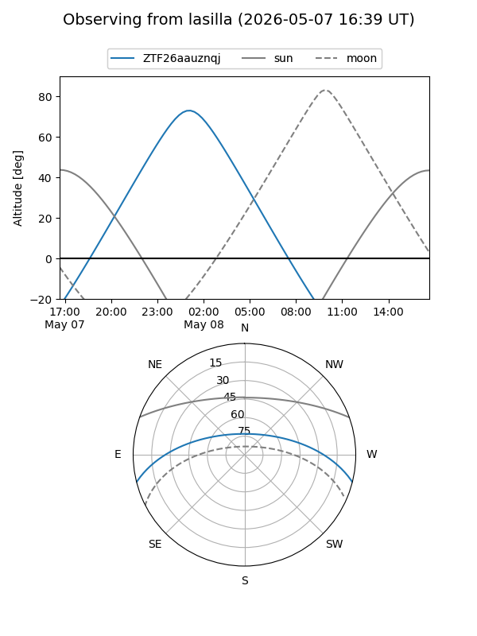
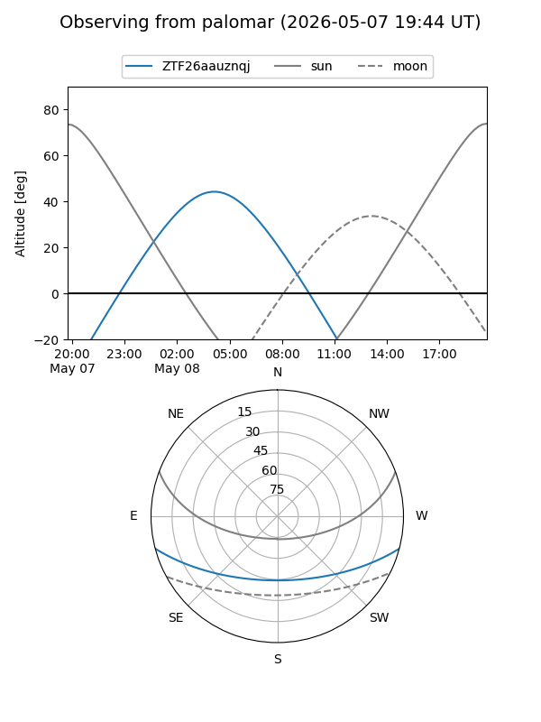

ZTF26aauznqj
Target ZTF26aauznqj at 2026-05-08 04:56
Aliases and brokers:
FINK: link
Lasair: link
ALeRCE: link
alt names
ZTF26aauznqj (ztf,fink_ztf)
Coordinates:
equatorial (ra, dec) = 170.7277,-12.22031
equatorial (HMS+DMS) = 11:22:54.65,-12:13:13.11
galactic (l, b) = (271.4468,+45.17104)
Flags:
Photometry:
last ztfg=19.87
1 ztfg detections
Lightcurve
Visibility


Additional plots